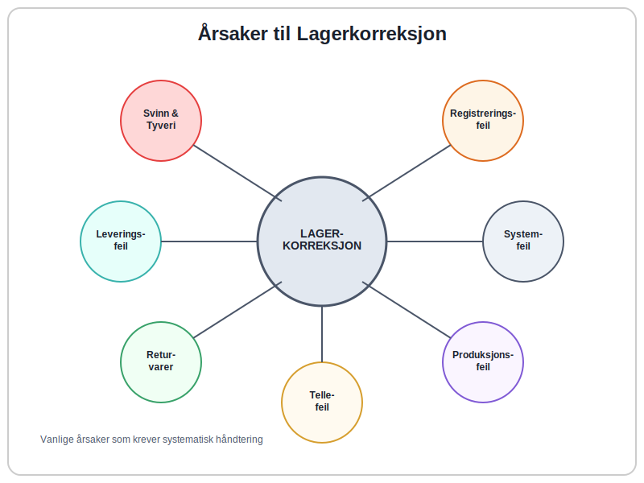
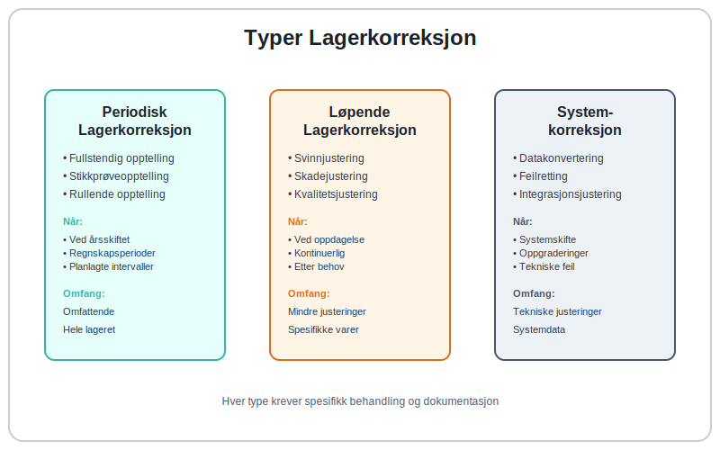
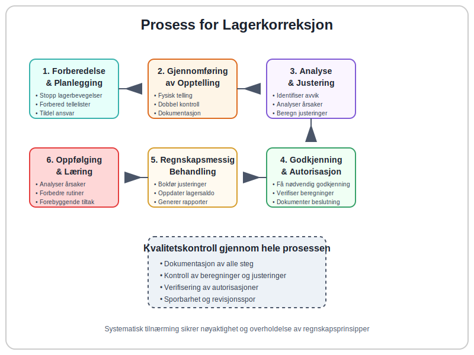
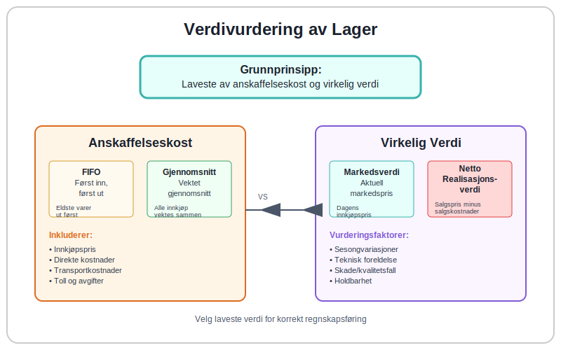
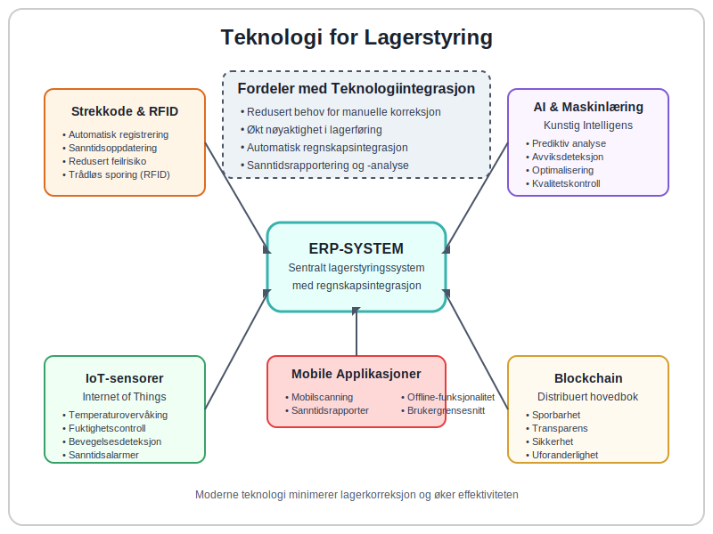

Lagerkorreksjon er en regnskapsmessig justering som gjøres for å korrigere avvik mellom det registrerte lageret i regnskapssystemet og det faktiske fysiske lageret. Dette er en kritisk prosess for å sikre nøyaktig lagerverdi i balansen og korrekt beregning av varekostnad. Lagerkorreksjon påvirker direkte bedriftens driftsresultat og er en sentral del av god internkontroll.
Seksjon 1: Årsaker til Lagerkorreksjon
Lagerkorreksjon blir nødvendig når det oppstår avvik mellom bokført lager og fysisk lager. Dette kan skyldes flere faktorer som må identifiseres og håndteres systematisk for å opprettholde nøyaktig lagerføring.

1.1 Vanlige Årsaker til Lageravvik
- Svinn og tyveri: Naturlig svinn, skade eller tyveri av varer
- Registreringsfeil: Feil ved inn- eller utregistrering av varer
- Leveringsfeil: Avvik mellom bestilt, levert og registrert antall
- Returvarer: Manglende registrering av returnerte varer
- Produksjonsfeil: Feil i produksjonsrapportering eller materialforbruk
- Systemfeil: Tekniske feil i lagerstyringssystemet
- Tellefeil: Menneskelige feil ved lageropptelling
- Feilplassering: Varer plassert på feil lagerlokasjon som gjør dem vanskelige å finne
1.2 Konsekvenser av Ukorrekt Lagerføring
Når lagerføringen ikke stemmer med virkeligheten, kan dette få alvorlige konsekvenser:
| Område | Konsekvens | Påvirkning |
|---|---|---|
| Regnskap | Feil varekostnad | Påvirker bruttofortjeneste |
| Balanse | Feil lagerverdi | Påvirker egenkapital |
| Drift | Feil bestillinger | Overflødig eller mangelfull lagerbeholdning |
| Økonomi | Feil lønnsomhetsanalyse | Dårlige beslutningsgrunnlag |
| Revisjon | Revisjonsmerknader | Kan påvirke attestering |
Seksjon 2: Typer Lagerkorreksjon
Det finnes flere typer lagerkorreksjon avhengig av årsak og omfang. Hver type krever spesifikk behandling og dokumentasjon for å opprettholde god internkontroll.

2.1 Periodisk Lagerkorreksjon
Dette er den mest omfattende typen lagerkorreksjon som utføres ved lageropptelling, vanligvis ved årsskiftet eller ved andre regnskapsperioder:
- Fullstendig opptelling: Alle varer telles fysisk
- Stikkprøveopptelling: Utvalgte varegrupper telles
- Rullende opptelling: Kontinuerlig telling av ulike varegrupper
2.2 Løpende Lagerkorreksjon
Mindre justeringer som gjøres fortløpende når avvik oppdages:
- Svinnjustering: Registrering av naturlig svinn
- Skadejustering: Nedskrivning av skadede varer
- Kvalitetsjustering: Justering for kvalitetsavvik
2.3 Systemkorreksjon
Tekniske justeringer i lagerstyringssystemet:
- Datakonvertering: Ved systemskifte eller oppgradering
- Feilretting: Korrigering av systemfeil eller programfeil
- Integrasjonsjustering: Justering mellom ulike systemer
Seksjon 3: Prosess for Lagerkorreksjon
En systematisk tilnærming til lagerkorreksjon sikrer nøyaktighet og overholdelse av regnskapsprinsipper. Prosessen må være godt dokumentert og følge etablerte rutiner for internkontroll.

3.1 Forberedelse og Planlegging
Før lagerkorreksjon gjennomføres, må følgende forberedelser gjøres:
- Stopp lagerbevegelser: Midlertidig stopp av inn- og utleveringer
- Forbered tellelister: Systematiske lister over alle varegrupper
- Tildel ansvar: Utpek ansvarlige personer for ulike områder
- Sikre dokumentasjon: Forbered skjemaer og registreringssystemer
3.2 Gjennomføring av Opptelling
Selve opptellingsprosessen må følge etablerte rutiner:
- Fysisk telling: Systematisk telling av alle varer
- Dobbel kontroll: To personer teller uavhengig
- Dokumentasjon: All telling dokumenteres umiddelbart
- Kvalitetskontroll: Stikkprøver for å verifisere nøyaktighet
3.3 Analyse og Justering
Etter opptelling analyseres avvik og nødvendige justeringer gjøres:
- Identifiser avvik: Sammenlign fysisk og bokført lager
- Analyser årsaker: Undersøk hvorfor avvik har oppstått
- Beregn justeringer: Kalkuler nødvendige regnskapsjusteringer
- Godkjenn endringer: Få nødvendig godkjenning før justering
- Dokumenter i lagerrapporter: Systematisk dokumentasjon av alle korreksjon
Seksjon 4: Regnskapsmessig Behandling
Lagerkorreksjon må behandles korrekt i regnskapet for å sikre at årsregnskapet gir et rettvisende bilde av bedriftens finansielle stilling.
4.1 Bokføringseksempler
Her er vanlige bokføringer ved lagerkorreksjon:
Ved lagerreduksjon (svinn/tyveri):
Debet: Varekostnad/Svinn 10.000
Kredit: Varelager 10.000
Ved lagerøkning (feil registrering):
Debet: Varelager 5.000
Kredit: Varekostnad 5.000
4.2 Påvirkning på Resultatregnskap
Lagerkorreksjon påvirker flere poster i resultatregnskapet:
| Korreksjon | Påvirkning | Resultat |
|---|---|---|
| Lagerreduksjon | Økt varekostnad | Redusert bruttofortjeneste |
| Lagerøkning | Redusert varekostnad | Økt bruttofortjeneste |
| Nedskrivning | Ekstraordinær kostnad | Redusert driftsresultat |
4.3 Påvirkning på Balansen
I balansen påvirkes følgende poster:
- Varelager: Justeres til faktisk verdi
- Egenkapital: Påvirkes av resultateffekten
- Opptjent egenkapital: Endres med årets resultat
Seksjon 5: Verdivurdering ved Lagerkorreksjon
Korrekt verdivurdering av lageret er kritisk for nøyaktig lagerkorreksjon. Dette påvirker både anskaffelseskost og avskrivning.

5.1 Verdivurderingsprinsipper
Norsk regnskapslovgivning krever at varelager vurderes til laveste av anskaffelseskost og virkelig verdi:
- Anskaffelseskost: Opprinnelig innkjøpspris pluss direkte kostnader
- Virkelig verdi: Markedsverdi eller netto realisasjonsverdi
- FIFO-prinsippet: Først inn, først ut ved kostnadsberegning
- Gjennomsnittskost: Vektet gjennomsnitt av innkjøpspriser
5.2 Nedskrivning av Lager
Når lagerverdien har falt, må det foretas nedskrivning:
- Identifiser verdifall: Sammenlign bokført og markedsverdi
- Beregn nedskrivning: Differansen mellom verdiene
- Bokfør justering: Reduser lagerverdi og øk kostnad
- Dokumenter årsak: Begrunn nedskrivningen
5.3 Spesielle Vurderinger
Enkelte varetyper krever spesiell oppmerksomhet:
- Sesongvarer: Vurder salgsbarhet etter sesong
- Moteartikler: Rask verdifall ved trendskifte
- Tekniske produkter: Foreldelse ved nye modeller
- Matvarer: Holdbarhet og utløpsdato
Seksjon 6: Internkontroll og Rutiner
Effektiv internkontroll er essensielt for å minimere behovet for lagerkorreksjon og sikre nøyaktig lagerføring. Dette er en viktig del av bedriftens overordnede internkontrollsystem.
6.1 Forebyggende Tiltak
For å redusere behovet for lagerkorreksjon bør følgende rutiner etableres:
- Daglig lagerføring: Kontinuerlig oppdatering av lagersaldo
- Autorisasjonskontroll: Kun autoriserte personer håndterer lager
- Fysisk sikring: Låsing og overvåking av lagerområder
- Systemkontroller: Automatiske kontroller i lagersystemet
- Regelmessig avstemming: Månedlig avstemming av lagersaldo
6.2 Detektive Kontroller
Kontroller for å oppdage avvik tidlig:
- Stikkprøvetelling: Regelmessig telling av utvalgte varer
- Avviksrapportering: Systematisk rapportering av uregelmessigheter
- Trendanalyse: Analyse av lagerbevegelser og svinnprosent
- Nøkkeltallsoppfølging: Overvåking av lageromløpshastighet
- Lagerrapportering: Systematisk dokumentasjon og analyse av lagerstatus
6.3 Korrigerende Tiltak
Når avvik oppdages, må korrigerende tiltak iverksettes:
- Umiddelbar undersøkelse: Finn årsak til avviket
- Korrigerende handling: Rett opp i rutiner eller systemer
- Oppfølging: Sikre at tiltak har ønsket effekt
- Læring: Bruk erfaringer til å forbedre rutiner
Seksjon 7: Teknologi og Automatisering
Moderne teknologi kan betydelig redusere behovet for manuelle lagerkorreksjon og øke nøyaktigheten i lagerføringen. Integration med ERP-systemer er særlig viktig.

7.1 Automatiserte Lagersystemer
Moderne lagerstyringssystemer tilbyr flere automatiseringsmuligheter:
- Strekkodescanning: Automatisk registrering ved inn- og utleveringer
- RFID-teknologi: Trådløs identifikasjon og sporing av varer
- Sanntidsoppdatering: Øyeblikkelig oppdatering av lagersaldo
- Automatiske bestillinger: Automatisk påfyll ved lavt lagernivå
7.2 Integration med Regnskapssystem
Seamless integration mellom lager- og regnskapssystem sikrer:
- Automatisk bokføring: Lagerbevegelser bokføres automatisk
- Konsistente data: Samme informasjon i alle systemer
- Redusert feilrisiko: Mindre manuell databehandling
- Sanntidsrapportering: Oppdaterte rapporter til enhver tid
7.3 Kunstig Intelligens og Maskinlæring
Avanserte systemer bruker AI for å:
- Prediktiv analyse: Forutsi lagerbehov og svinn
- Avviksdeteksjon: Automatisk identifisering av uvanlige mønstre
- Optimalisering: Forbedre lagerplassering og -nivåer
- Kvalitetskontroll: Automatisk kvalitetsvurdering
Seksjon 8: Juridiske og Regulatoriske Krav
Lagerkorreksjon må utføres i samsvar med norsk regnskapslovgivning og etablerte regnskapsprinsipper. Dette sikrer at årsregnskapet oppfyller lovkrav og gir et rettvisende bilde.
8.1 Regnskapslovens Krav
Regnskapsloven stiller følgende krav til lagerføring:
- Korrekt verdsettelse: Lager skal verdsettes til laveste av kost og markedsverdi
- Konsistent metode: Samme verdivurderingsmetode skal brukes konsekvent
- Tilstrekkelig dokumentasjon: All lagerkorreksjon må være godt dokumentert
- Periodisering: Lagerkorreksjon skal periodiseres korrekt
8.2 Revisjonsforhold
Revisor vil vurdere lagerkorreksjon som del av revisjonen:
- Vesentlighetsgrense: Store lagerkorreksjon kan påvirke revisjonsuttalelsen
- Kontrollaktiviteter: Revisor vil teste internkontroll for lager
- Substansielle tester: Fysisk opptelling og verdivurdering testes
- Dokumentasjonskrav: Tilstrekkelig dokumentasjon må foreligge
8.3 Skattemessige Konsekvenser
Lagerkorreksjon kan ha skattemessige implikasjoner:
- Fradragsrett: Svinn og nedskrivning kan være fradragsberettiget
- Tidspunkt: Når fradrag kan kreves avhenger av årsak
- Dokumentasjon: Skattemyndighetene krever solid dokumentasjon
- Konsistens: Regnskapsmessig og skattemessig behandling bør være konsistent
Seksjon 9: Beste Praksis og Anbefalinger
For å sikre effektiv lagerkorreksjon og minimere fremtidige avvik, bør bedrifter følge etablerte beste praksis-prinsipper.
9.1 Organisatoriske Tiltak
- Klare ansvarsforhold: Definer hvem som har ansvar for hva
- Kompetanseutvikling: Sørg for at ansatte har nødvendig kunnskap
- Regelmessig opplæring: Hold ansatte oppdatert på rutiner og systemer
- Kvalitetssikring: Implementer kontroller på alle nivåer
9.2 Systemiske Forbedringer
- Standardiserte prosesser: Utvikle klare, dokumenterte rutiner
- Automatisering: Automatiser så mye som mulig av lagerføringen
- Integration: Sikre sømløs dataflyt mellom systemer
- Backup og sikkerhet: Beskytt data mot tap og manipulasjon
9.3 Kontinuerlig Forbedring
- Regelmessig evaluering: Vurder effektiviteten av rutiner og systemer
- Benchmarking: Sammenlign med bransjestandarder
- Innovasjon: Vurder nye teknologier og metoder
- Læring: Bruk erfaringer til kontinuerlig forbedring
Seksjon 10: Konklusjon og Fremtidsperspektiver
Lagerkorreksjon er en kritisk prosess som krever systematisk tilnærming, god internkontroll og korrekt regnskapsmessig behandling. Med økende digitalisering og automatisering blir det stadig viktigere å ha robuste systemer og rutiner på plass.
10.1 Nøkkelfaktorer for Suksess
- Proaktiv tilnærming: Forebygg avvik i stedet for å reparere
- Teknologiutnyttelse: Bruk moderne verktøy for økt nøyaktighet
- Kompetanse: Sikre at organisasjonen har nødvendig kunnskap
- Kontinuitet: Oppretthold fokus på lagerkvalitet over tid
10.2 Fremtidige Trender
Lagerstyring vil fortsette å utvikle seg med:
- IoT-sensorer: Sanntidsovervåking av lagerforhold
- Blockchain: Sporbarhet og transparens i forsyningskjeden
- Robotisering: Automatiserte lageroperasjoner
- Prediktiv analyse: Bedre prognoser og planlegging
Effektiv lagerkorreksjon er ikke bare en regnskapsmessig nødvendighet, men en strategisk fordel som kan bidra til bedre lønnsomhet, reduserte kostnader og økt konkurranseevne.